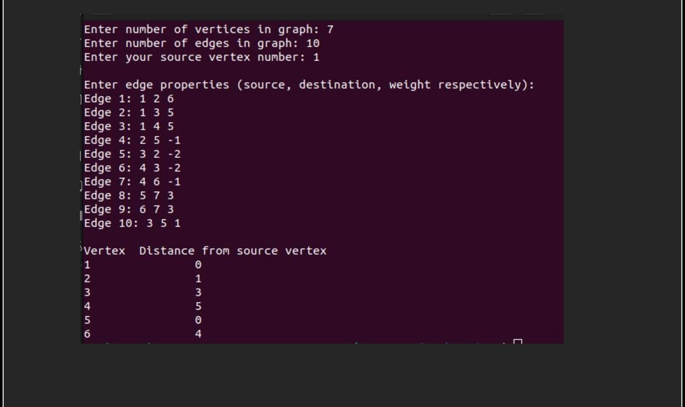

Program 1:
#include <stdio.h>
#include <stdlib.h>
#include <limits.h>
struct Edge {
int source, destination, weight;
};
struct Graph {
int V, E;
struct Edge* edge;
};
struct Graph* createGraph(int V, int E) {
struct Graph* graph = (struct Graph*)malloc(sizeof(struct Graph));
graph->V = V;
graph->E = E;
graph->edge = (struct Edge*)malloc(E * sizeof(struct Edge));
return graph;
}
void finalSolution(int dist[], int n) {
printf("\nVertex\tDistance from source vertex\n");
for (int i = 1; i < n; ++i) {
printf("%d\t\t%d\n", i, dist[i]);
}
}
void bellmanFord(struct Graph* graph, int source) {
int V = graph->V;
int E = graph->E;
int storeDistance[V];
for (int i = 0; i < V; i++)
storeDistance[i] = INT_MAX;
storeDistance[source] = 0;
for (int i = 1; i < E; i++) {
for (int j = 0; j < E; j++) {
int u = graph->edge[j].source;
int v = graph->edge[j].destination;
int weight = graph->edge[j].weight;
if (storeDistance[u] != INT_MAX && storeDistance[u] + weight < storeDistance[v]) {
storeDistance[v] = storeDistance[u] + weight;
}
}
}
for (int i = 0; i < E; i++) {
int u = graph->edge[i].source;
int v = graph->edge[i].destination;
int weight = graph->edge[i].weight;
if (storeDistance[u] != INT_MAX && storeDistance[u] + weight < storeDistance[v]) {
printf("Graph contains negative cycle\n");
return;
}
}
finalSolution(storeDistance, V);
}
int main() {
int V, E, S;
printf("Enter number of vertices in graph: ");
scanf("%d", &V);
printf("Enter number of edges in graph: ");
scanf("%d", &E);
printf("Enter your source vertex number: ");
scanf("%d", &S);
struct Graph* graph = createGraph(V, E);
printf("\nEnter edge properties (source, destination, weight respectively):\n");
for (int i = 0; i < E; i++) {
printf("Edge %d: ", i + 1);
scanf("%d %d %d", &graph->edge[i].source, &graph->edge[i].destination, &graph->edge[i].weight);
}
bellmanFord(graph, S);
return 0;
}

Algorithm :
1. Start
2. Prompt the user to enter the number of vertices (V) and edges (E) of the graph.
3. Create a graph data structure with V vertices and E edges.
4. Prompt the user to enter the source vertex number (S).
5. Initialize an array to store distances from the source vertex to all other vertices.
6. Set the distance of the source vertex to 0 and initialize all other distances to infinity.
7. Iterate E times:
a. For each edge (u, v) with weight w:
i. Update the distance of vertex v to the minimum of its current distance and the sum of the distance of vertex u and the weight of the edge (u, v).
8. Check for the presence of negative cycles:
a. Iterate over all edges:
i. If the distance of vertex u plus the weight of the edge (u, v) is less than the distance of vertex v, then a negative cycle exists.
9. Print the distances from the source vertex to all other vertices.
10. End